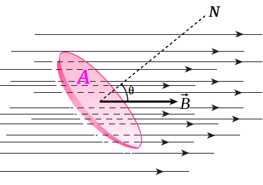
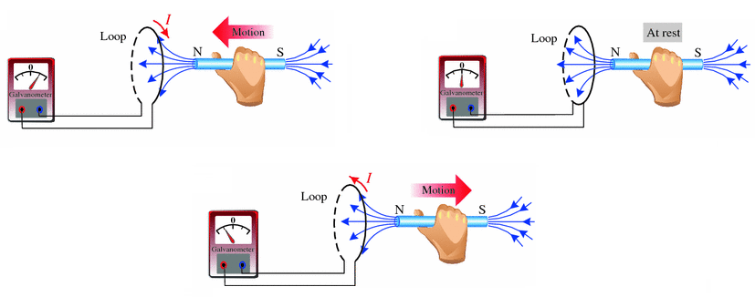
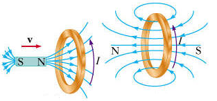
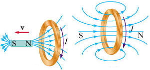

Aula11-87: Indução magnética (lei de Faraday e lei de Lenz)
Fluxo magnético
|
Fluxo magnético é a medida do campo magnético total que atravessa uma determinada área. Para calculá-lo, considerando um campo magnético homogêneo, usamos a seguinte fórmula: Em que: ◦ ◦ ◦ A unidade de medida do fluxo magnético no SI é: |
 |
Lei de Faraday (lei da indução eletromagnética)
Uma variação de fluxo magnético numa espira gerará nessa espira uma força eletromotriz que fará circular por ela uma corrente elétrica.

O módulo da força eletromotriz é igual à variação do fluxo magnético por unidade de tempo:
Lei de Lenz
A lei de Lenz é a regra que nos indica o sentido da corrente gerada numa espira quando ela é submetida a um fluxo magnético variável. Segundo essa lei, a variação do fluxo magnético fará surgir no fio uma corrente em sentido tal que ela gerará, por sua vez, um outro campo magnético que tenderá a impedir a variação do fluxo magnético que lhe deu origem. Em outras palavras: a corrente induzida no fio, devida à variação do fluxo magnético, é tal que gera um campo magnético que tende a impedir, por meio de forças de atração ou repulsão magnética, a variação do fluxo magnético externo.
|
➔ CASO 1: variação de fluxo positiva (o ímã é aproximado, fazendo aumentar o fluxo magnético).  Observe que a bobina cria uma corrente elétrica que gera um campo magnético que repele a aproximação do ímã. |
➔ CASO 2: variação negativa (o ímã é afastado).  Aqui, a bobina cria uma corrente elétrica que gera um campo magnético que atrai o ímã, que está se afastando. |
Podemos reescrever a lei de Faraday levando em consideração as observações de Lenz, atribuindo a ela o sinal negativo, que informa que a força eletromotriz gerada é sempre oposta à variação do fluxo magnético: